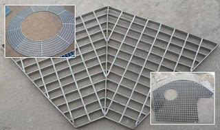

Jual Genteng Metal di Lumajang ☎ 0822 4582 0777 (Rinanti)
Galvalum sudah menjadi primadona bagi banyak orang yang bekerja dalam industri pembangunan. Dikarenakan banyak keunggulan yang mengalahkan kayu sebagai rangka konvensional. Keberadannya pun sudah menggeser kayu dan bahkan sewaktu-waktu dapat menggantinya. Adapula atap galvalum yang berbentuk unik yaitu atap lengkung galvalum.
Distributor & Supplier Genteng Metal

Genteng metal banyak dipilih karena memang lebih tahan lama, anti bocor, tidak berjamur, kesan yang diberikan pada atap rumah menjadi elegan dan indah selain itu juga karena harga yang lebih ekonomis. Berbicara tentang genteng metal Lumajang memang akan identik dengan perbandingan metal vs keramik. Salah satu dari kelebihan genteng metal Lumajang adalah lebih membuat rumah anda bersih, rapi, lebih anti bocor, dan juga lebih ringan. Selain itu genteng metal Lumajang dinilai lebih anti bocor. Produk SNI kami sudah dijamin keasliannya dan tidak KW. Genteng metal dinilai lebih praktis dan lebih awet. Apakah anda sedang mencari genteng metal Lumajang berkualitas? Maka anda berada di tempat yang tepat, silakan kunjungi dis.or.id dan dapatkan info menarik khusus untuk anda yang ingin segera mengetahui keunggulan genteng metal Lumajang ini.
Silahkan hubungi kami untuk informasi lebih lanjut. kami berusaha mencari kepuasan pelanggan kami.
Info Pemesanan Selengkapnya
Google Maps: https://www.google.com/maps/d/u/0/viewer?mid=18K_Vf8GKnjN9AtE2jUMATDSYvScojDst&ll=-7.269373870070218%2C112.655575&z=16
Note: https://www.facebook.com/notes/distributor-of-industrial-supply/pabrik-supplier-genteng-metal/1783191985314014/
Event: https://www.facebook.com/events/1480458558737554/
Portfolio Produk: https://www.facebook.com/pg/DistributorOfIndustrialSupplyDIS/photos/?tab=album&album_id=1683750531924827
Distributor & Supplier Besi Beton

Beragam jenis beton tersebut bisa diaplikasikan untuk berbagai kebutuhan pembangunan. Berbagai macam tipe tersebut bisa Anda gunakan untuk pembangunan. Definisi dari besi beton adalah sebuah besi berupa material yang umumnya digunakan sebagai konstruksi.
Besi beton polos sangat jarang digunakan kecuali digunakan sebagai kolom.
Salah satu cara untuk mendapatkannya adalah dengan membeli di dis.or.id. Anda bisa mendapatkan besi beton dengan harga yang sangat murah dan terjangkau. Karena, disan anda bisa mendapatkan besi beton yang anda inginkan yang pastinya sesuai dengan yang anda ekpetasikan.
Distributor & Supplier Steel Grating

Grating merupakan jenis baja yang bisa dibentuk kotak-kotak ataupun bilah yang antar bagiannya saling membentuk hubungan. Steel grating sangat aman untuk digunakan pada beberapa kontruksi bangunan. Untuk permukaan atas bagian kiri didesain bergerigi agar tidak membahayakan Anda. Grating tersebut sangat bermanfaat dan penting untuk keamanan Anda. Karena harga murah tidak menjamin adanya kualitas yang terbaik. Grating ini bisa dirangkai plat strip besi baja dan besi ulir yang dilas pada permukaan silangnya sehingga akan membuat bangunan lebih kokoh dan kuat. Grating banyak digunakan dalam pembangunan lantai seperti deck, pabrik, tangga, industri, minyak, pertambangan, dan masih banyak lagi. Plat Grating dapat Anda temui dimana saja.
Kini anda bisa mendapatkan steel dengan mengunjungi dis.or.id.
Distributor & Supplier Pipa (Hitam/Gas, Galvanis)

Kekuatan dari pipa hitam gas ini memang sangat kuat, tak heran bila untuk kebutuhan konstruksi bangunan yang berat material ini tidak pernah absen. Setiap konstruksi bangunan pasti akan memanfaatkan jenis pipa hitam karena ia sangat kokoh, bahkan bagian luarnya telah terlapis oleh stainless steel sehingga menjadikannya tahan korosi. Pipa hitam galvanis telah di produksi khusus untuk kebutuhan pertambangan minyak dan gas, maka tak heran bila banyak orang yang menyebut pipa hitam adalah pipa gas. Sifatnya yang tahan karat menjadikan pipa ini dapat diaplikasikan disegala perubahan cuaca Indonesia. Tentukan kebutuhan pipa hitam anda pada kami, tersedia ukuran ½ inc sampai 40 inc. Hubungi saja kontak kami untuk melakukan konsultasi mengenai kebutuhan pipa hitam gas galvanis bagi proyek industri anda.
Distributor & Supplier Kawat Bronjong/Gabion

Kawat bronjong dikenal sebagai anyaman yang terbuat dari kawat di mana tujuannya agar tebing yang tinggi tidak longsor. Ini berbentuk seperti anyaman yang terbuat dari kawat biasa. Namun, banyak yang tidak tahu jika ternyata kawat bronjong ini juga digunakan sebagai pelabis tiang penyangga jembatan. Selain itu, kawat ini juga digunakan pada tiang penyangga bangunan besar atau tiang penyangga jembatan.
Kawat bronjong kini dapat anda temui dan dapatkan dengan mengunjungi dis.or.id. Disana anda bisa mendapatka kawat dengan harga yang cukup terjangkau dengan kualitas terbaik yang dimilikinya. Tak hanya itu, kawat bronjong yang disediakn juga terdapat bermacam ukuran.
Distributor & Supplier WF H-beam
.jpg)
Besi WF kini menjadi jenis baja struktural yang banyak dikenal masyarakat saat ini. jenis besi WF banyak dimanfaatkan sebagai konstruksi baja. Kekuatan dari besi ini sangat besar dan padat serta kuat dengan daya tekan dan tarik yang tinggi. Di samping itu, kepadatan yang tinggi juga dimiliki oleh besi jenis ini sehingga kualitasnya memang benar-benar terjamin. Di samping itu, besi ini juga mempunyai sisi padat yang bagus.
Saat membawanya pun Anda akan lebih mudah dan praktis.
Kini anda bisa mendapatkan besi WF dengan berbagai ukuran tentunya dengan harga yang sangat terjangkau. Harga yang di patok juga sangat terjangakau, jadi anda tidak perlu mengeluarkan budget terlalu banyak. Disana anda bisa mendapatkan besi wf yang anda inginkan. Pastinya dengan harga yang sangat terjangkau.
Distributor & Supplier Expanded Metal

Expanded metal atau yang dikenal juga dengan grid mesh ini adalah lembaran baja berbentuk jala dengan lubang-lubang yang homogen dan sangat cocok jika digunakan untuk berbagai aplikasi selain dari Pagar BRC. Fungsi expanded metal diantaranya untuk anak tangga pada tower dan ternyata banyak juga digunakan di dermaga/pertambangan/konstruksi lepas pantai. Expanded Metal memiliki keunggulan dibandingkan dengan yang lain dari sisi kekuatannya yang cukup bagus serta biasa digunakan sebagai instalasi pagar, lantai, ataupun dinding. Umumnya dipergunakan sebagai partisi pengaman gudang, railing, pelindung mesin, pagar penjara, plafond, dan lain sebagainya.
Kini anda bisa mendapatkan expanded metal dengan kualitas dan mutu yang telah terjamin di dis.or.id. Terdapat berbagai macam ukuran expanded metal dengan banyak keunggulan yang bisa anda rasakan ketika mengaplikasikannya langsung pada bangunan anda. Kunjungi dis.or.id untuk memesan expanded metal dengan harga yang murah serta mutu yang terjamin.
Distributor & Supplier Plat (Hitam, Kapal, Bordes, Strip)

Berbicara tentang plat besi memang beragam, hal ini di tentukan dari seberapa besar dan tebal plat yang di inginkan. Namun selain itu anda juga dapat membeli nya secara online karena saat ini banyak sekali toko online yang melayani penjualan plat besi lembaran. Dengan membeli secara online, anda akan lebih efektif dan efisien dalam melakukan pemesanan. Karena dis.or.id adalah distributor pertama yang langsung mengambil barang dari pabrik.
Jika anda sedang mencari plat hitam, bordes, kapal dan jenis plat lainnya. Anda bisa langsung saja mengunjungi dis.or.id. Dis.or.id menjual plat besi dengan harga terjangkau, banyak ukuran ataupun dapat menyesuaikan ukuran yang anda minta. Anda pastinya tidak akan rugi jika membeli plat besi dengan banyak varian dan jenis yang disediakan disana.
Distributor & Supplier Floor Deck (Bondex)

Floor deck ini adalah material yang bisa difungsikan sebagai media pengganti dari material konvensional yang umumnya berbentuk papan lebar, misalnya saja seperti triplek. Biasa di gunakan sebagai alas dalam proses pembuatan lantai dan atap dak beton. Produk material ini berfungsi untuk menggantikan fungsi bekisting pada saat melakukan pengecoran plat pada lantai. Sebagai pengganti tulangan positif searah. Maka dari itu tidak mengherankan jika saat ini banyak yang lebih memilih menggunakan Floor Deck ini.
Kini anda bisa mendapatkan floor deck berkualitas dan bermutu tinggi dengan hanya mengunjungi situs dis.or.id. Disana tersedia berbagai macam ukuran dari floor deck yang bisa anda beli sesuai dengan kebutuhan anda.
Distributor & Supplier Atap Galvalum

Seng galvalum adalah bahan seng dengan berbagai kelebihan yang memiliki komposisi tertentu. Apalagi bila ruangan tersebut tidak dilengkapi pendingin ruangan.
Primadona galvalum ini dinilai lebih efektif jika dibandingkan dengan galvanis. Galvalum atau biasa disebut baja ringan, terbukti mempunyai banyak kelebihan jika dibandingan dengan kayu.
Bahkan, setiap rumah khususnya di perumahan sudah banyak yang menggunakan atap galvalum sebagai teras khusus ntuk mobilnya. Jika beban atap tidak terlalu berat, maka galvalum kecil adalah solusi anda. Bila bebannya berat maka anda harus memakai galvalum dengan ukuran yang lebih besar. Bahannya yang terkomposisi dengan baik membuatnya tidak berisik bahkan ketika hujan, tahan lama dan anti karat. Karena galvalum mempunyai daya tahan karat 4x dari galvanis. Tapi kayu rentan dimakan oleh rayap. Perbedaan ukurannya terletak pada panjang, lebar dan tebalnya.
Distributor & Supplier Atap Lengkung

Bagian yang berfungsi sebagai pelindung bagi pengguna dan isi bangunan dari panas, hujan dan berbagai macam cuaca adalah atap.
Sifat fleksibelnya dan modelnya yang unik membuatnya dapat dijadikan atap berbagai bangunan. Sehingga membuatnya tahan cuaca, bahkan ekstrim sekalipun. Sehingga membuat jenis atap tersebut mempunyai kelebihan dan kekurangannya sendiri.
Karena apabila atap tersebut sudah tertembus oleh air. Bahkan tidak sedikit yang rela mengeluarkan gocek yang tidak sedikit mengingat harganya yang sedikit lebih mahal dibandingkan atap galvalum dengan model biasa. Atap dengan kualitas baik adalah atap yang kuat menahannya derasnya iklim dan cuaca. Bila anda tertarik untuk mempunyai atap lengkung pada bangunan anda maka janganlah ragu. Atap lengkung yang anda cari tentunya adalah atap dengan kualitas tinggi dengan harga terjangaku.
Distributor & Supplier Truss Canal C

Sudah tahukah anda apa yang dimaksud dengan galvalum? Galvalum memang istilah yang kerap kali kita dengar dan umumnya memang sangat erat kaitannya dengan baja. Rayap tentunya tidak dapat menggerogoti besi yang satu ini. Sehingga akan awet bahkan dengan karat sekalipun. Cara pemasangannya besi kanal c dengan reng galvalum juga tidak boleh sembarangan. Besi kanal C ini selain digunakan untuk konstruksi bangunan dalam pembuatan atap, juga bisa juga dan banyak juga yang menggunakan nya sebagai bahan otomotif, seperti kerangka mobil, sepedamotor dan onderdil lain nya. Jangan merapatkan jarak dan ukuran antara reng jika anda ingin lebih kuat dan stabil karen ajika hal itu dilakukan maka anda akan menghabiskan banyak biaya untuk membeli reng galvalume. Mencari kanal c galvalum berkualitas dengan harga murah? Maka dis.or.id adalah jawaban tepat untuk anda. Disana anda akan banya kmendapat info menarik seputar truss besi kanal c dan masih banyak lagi. Kunjungi website dis.or.id untuk info lebih lanjut dan hubungi kontak yang tersedia sesuai dengan kebutuhan anda.
Distributor & Supplier Hollow Galvalum

Hollow galvalum menjadi primadona bagi banyak orang dikarenakan uniknya komponen berikut ini. Namun dominasi bahan sebagian besar menggunakan alumunium dengan presetase rata rata 55%.
Bahan jenis ini memiliki banyak sekali kelebihan, selain tahan terhadap karat, hollow galvalum juga tahan terhadap serangan rayap dan juga memiliki beban yang cukup ringan. Rumah rumah masa kini, sudah banyak yang menggunakan rangka jenis hollow untuk pembuatan plafonnya. Memang selain memiliki kekuatan yang luar biasa, juga rangka plafon jenis ini memiliki ketahanan yang bisa bertahan hingga berpuluh puluh tahun. Apakah anda sedang mencari hollow galvalum dengan segala kelebihannya? Bila iya, maka anda cukup mengunjungi situs dis.or.id. Untuk mendapatkan kriteria tersebut, anda bisa datang ke tempat kami. Tunggu apa lagi, silahkan hubungi customer service kami untuk melakukan pemesanan hollow galvalum.
Distributor & Supplier Seng Gelombang

Seng gelombang memiliki banyak keunggulan dari berbagai sisi. Ia lebih mudah di pasang dan harga jual yang ekonomis dipasaran membuat seng gelombang memiliki banyak peminat. Tak heran jika seng gelombang melengkapi fiturnya dengan menyediakan beragam ukuran seng gelombang menurut standar SNI.
Dengan seng gelombang kecil, anda tak perlu lagi repot memotong ukuran asli seng gelombang dan menata seng gelombang dengan ukuran yang pas pada atap bangunan. Distributor penjual seng gelombang sekarang ini sudah menyebar ke seluruh Indonesia, baik di kota-kota besar maupun kecil. Salah satu distributor yang terkenal akan kualitas dan jaminannya adalah dis.or.id anda dapat mengunjungi situs tersebut dan menjelajahinya.
Distributor & Supplier Plat Seng

Seng atau Plat gavalum dapat dikatakan pembaruan dari seng biasa pada umumnya, karena jenis seng ini tidak panas, tidak bising, anti karat, tahan lama dan masih banyak kelebihan lainnya. Masing masing ukuran tersebut memiliki harga yang berbeda beda, karena biasanya harga akan tergantung dari berat dalam kilogram.
Banyak orang yang selama ini hanya membeli seng galvalum tanpa mengetahui ukuran yang sesuai dengan kebutuhan nya. Bagaimana perihal harganya? Bila anda bandingkan maka jarak harga plat galvanis 3mm akan berbeda jauh dengan 1mm, tentu hal ini wajar karena salah satu penentu harga dari sebuah plat adalah ukuran ketebalannya. Namun jika anda hanya sekedar menggunakan nya untuk kebutuhan renovasi (dalam jumlah yang sedikit) anda dapat membeli yang per meter. Namun apabila anda berencana membangun sebuah atap dari awal, sebaik nya anda membeli plat galvanis lembaran, karena kebutuhan anda banyak dan juga luas, sehingga yang lembaran ini akan lebih efektif untuk anda.
Plat galvanis bisa anda dapatkan dengan membeli lembaran ataupun per meter, harga plat galvanis ditentukan dari ukuran yang anda inginkan. Lalu berapa harga plat galvanis 2018? Bila anda sedang mencari harga terbaru hari ini juga, anda dapat menghubungi kami karena kami menjual plat galvanis, galvalum dengan berbagai ketebalan dan ukuran.
Distributor & Supplier Besi Wiremesh

Nama lain dari besi wiremesh ini adalah besi anyam. Ada banyak jenis besi wiremesh, diantaranya adalah besi wiremesh dengan desain kotak dan jajar genjang. Manfaat besi wiremesh untuk kebutuhan konstruksi cukup banyak, ia bisa digunakan sebagai penguat dak beton, plat lantai, dan anak tangga. Jika anda hendak mengaplikasikan besi wiremesh, maka tentukan dulu kebutuhannya sehingga bisa menentukan jenis wiremesh mana yang cocok untuk diaplikasikan. Untuk bangunan bertingkat besi wiremesh yang digunakan adalah ukuran 8 sampai 10. Sementara ketebalan 4 – 6 dimanfaatkan untuk bangunan biasa. Besi wiremesh diproduksi dengan sistem las otomatis sehingga hasilnya rapi dan jaraknya teratur. Bagi anda yang membutuhkan besi wiremesh, kini dapat memesan pada kami!
Distributor & Supplier Pagar BRC
.jpg)
Pagar beton merupakan pagar yang dibuat dari material beton dimana ia memiliki diameter ketebalan 5 mm – 8 mm, tentu saja anda bisa memesan kebutuhan pagar BRC ini sesuai dengan kebutuhan. Potongan besi berdiameter tertentu tersebut dig abungkan dengan bantuan mesin las wiremesh. Ia termasuk kategori pagar minimalis yang siap pasang untuk melindungi bangunan rumah, gedung, dan kantor. Apalagi mengingat kekuatan pagar BRC tidak dapat diragukan lagi, karena pagar ini diproduksi dengan baja bertegangan tinggi U55 grade dengan tegangan ijin 2900kg/cm2 sekitar 2. Pagar BRC juga tahan karat karena lapisan besi telah terlindungi dengan galvanis. Bagi anda yang sedang membutuhkan pagar BRC, kami menawarkan produk ini bagi anda! pagar BRC dengan kualitas mutu terbaik dan harga yang murah.
Distributor & Supplier Kawat Loket, Kawat Harmonika

Untuk kebutuhan kawat penyekat, kawat pagar, maupun penutup jendela anda bisa manfaatkan jenis kawat loket harmonika karena strukturnya yang kuat dan membentuk seperti anyaman. Apalagi jenis kawat galvanis yang digunakan tahan karat dan korosi, sangat awet bila anda bandingkan dengan jenis kawat biasa. Apalagi bila jenis kawat harmonika yang digunakan adalah galvanis yang terkenal tahan karat maupun korosi sehingga sangat awet. Untuk informasi selengkapnya, anda dapat menghubungi kami, terlah tersedia kawat loket harmonika dengan diameter 1,5 mm – 4 mm, disertai lubang 20 mm sampai 70 mm tergantung dengan kebutuhan anda.
Distributor & Supplier CNP & UNP

Besi yang sering diaplikasikan untuk keperluan sambungan dan dudukan atap adalah besi kanal UNP, bentuk besi ini melengkung dan membentuk huruf U. Selain dimanfaatkan untuk kebutuhan tersebut, besi UNP cocok di gunakan untuk keperluan penutup dinding / girts. Dilihat secara sekilas, spesifikasi dari besi UNP hampir mirip dengan besi WF. Besi UNP juga sering dikaitkan dengan besi CNP yang juga masuk dalam kategori kelasnya. Besi CNP memiliki bentuk yang hampir mirip dengan huruf C sehingga ia sering disebut sebagai profil C / balok purlin. Besi CNP sangat fleksibel karena materialnya dapat dimodifikasi dengan menggunakan plat koil.
Distributor & Supplier Besi Siku

Pastinya anda sudah mengenal material besi siku ini dengan baik, dengan ciri khasnya sebagai besi penyangga banyak sekali manfaat yang diberikan olehnya. Besi siku memiliki bentuk siku yang sudah didesain khusus sehingga kuat bila digunakan sebagai besi penyangga. Pada umumnya besi siku yang banyak digunakan dalam kehidupan sehari-hari adalah besi siku sama sisi, dimana ia membentuk dua garis tegak lurus yang membentuk 90 derajat. Besi siku pada umumnya diproduksi dengan ukuran panjang 6 meter, sementara itu ukuran ketebalan dan lebarnya berbeda tergantung pada kebutuhan anda. Anda dapat mengunjungi situs resmi kami untuk info pemesanan besi siku selengkapnya! Telah tersedia besi siku dengan berbagai ukuran yang bisa anda pesan. Anda dapat memesan besi siku dengan berbagai ukuran pada kami.
Distributor & Supplier Hollow (Hitam, Galvanil, Galvanis)

Sekarang ini besi hollow pemanfaatannya sudah melebihi kayu, meskipun terbuat dari besi kualitasnya pun tidak dapat diragukan lagi.Sekarang sudah banyak orang yang beralih pemanfaatan dari kayu menjadi menggunakan besi hollow.Banyak orang yang mulai beralih dari pemanfaatannya yang menggunakan kayu beralih pada hollow hitam galvanil.Besi hollow saat ini menjadi material pengganti kayu yang sangat baik. Jika saat ini anda membutuhkan besi hollow, anda dapat menghubungi kontak yang telah tersedia atau kunjungi saja website resmi kami di dis.or.id. Kami telah menyediakan besi hollow hitam galvanil galvanis yang bisa anda pesan langsung. Apabila anda membutuhkan material hollow hitam, kami dapat melayani kebutuhan anda tersebut dengan berbagai spesifikasi ukuran. Kami pun merupakan distributor relasi dari dis.or.id yang menawarkan produk hollow hitam galvanil galvanis dengan kualitas terbaik dan harga yang murah. Manfaat besi hollow dalam kehidupan ini banyak sekali, diantaranya untuk keperluan pagar, teralis, pintu besi, dan berbagai kebutuhan lain. Butuh info lebih lanjut? Anda dapat menghubungi kontak yang telah tersedia. Untuk informasi detail mengenai panjang dan harganya, segera hubungi kami. Anda bebas untuk menentukan ukuran pesanan besi hollow yang dibutuhkan pada kami. Untuk itu hubungi kontak kami segera!
Distributor & Supplier Pipa Pancang

Untuk yang di bahas pertama adalah pipa pancang. Sedangkan dari namanya saja tetu sudah sangat familiar dengan konstruksi yang satu ini. Jika mengenal fungsinya yang memang sangat bermanfaat, apalagi bagi pembangunan di atas permukaan laut, pasti membuatnya lebih di kenal lagi. Sedangkan di mana bisa mendapatkan pipa pancang, jangan khawatir karena banyak distributor yang menawarkannya sehingga bisa di dapatkan dengan mudah. Salah satu yang di maksud adalah DIS. apalagi jika yang di katakan adalah di industri DIS ini. Termasuk juga di Industri DIS. Sedangkan untuk kualitas pipa pun akan sangat terjamin dengan mutu terbaik. Bukan hanya kualitas bahannya saja yang bagus tetapi juga untuk pembuatannya. Dengan begini, maka dalam penggunannya, pipa pancang juga bisa di aplikasikan secara maksimal.
Jasa Pondasi Bor (Strouss/Borepile)

Dalam hal ini, sekarang Anda tidak pelru khawatir karena ada banyak jasa yang melayani jasa pondasi bor. Terkait jasanya tidak perlu jauh-jauh karena di sini Anda bisa menemukan pemesanan yang mudah. Di sini jasa pondasi bor melayani pengeboran yang mana hasil dan kualitasnya terjamin. Pelakunya pun merupakan orang-orang terlatih yang sadah profesional dan lebih berpengalaman. Berbicara lebih dalam tentang pengeboran, tersedia dua jenis yang bisa Anda pilih. Mengenal lebih jauh tentang pondasi bor, sebenarnya ada dua jenis pengeboran di sini, yakni pengeboran manual dan mesin. sedangkan dari segi kualitas pun keduanya tidak jauh berbeda. Sedangkan untuk hasil pengeboran manual maupun yang otomatis atau menggunakan mesin, secara umum sama-sama bagusnya.
Distributor & Supplier Genset (New/Second)

Untuk genset atau singkatan dari generator set ini, pasti juga sudah banyak di kenali. Dalam pembeliannya sendiri, genset bisa berupa yang baru maupun yang bekas.
sedangkan dari segi merk, genset sendiri juga cukup variatif.
Distributor & Supplier UPS

Kalau menyebut UPS, mungkin akan banyak yang bertanya-tanya sebenarnya apa sih barang yang satu ini. Sedangkan pengertian UPS sendiri merupakan salah satu dari sekian banyak alat elektronik yang mampu di jadikan sebagai sumber listrik sementara manakala sumber utamanya terputus. Sebenarnya bisa di akui bahwa memiliki nya sangatlah penting. Terutama bagi para pengguna komputer yang tergantung terhadap enegi listrik. UPS ini terdiri dari beberapa jenis. Termasuk juga kualitas barang dan kapasitas listrik yang si hasilkan. Kalau untuk penjualannya sendiir, bisa di dapatkandi DIS dengan kualitas yang sangat memadai. Sedangkan dalam penjualan, di sini kami menawarkan UPS dengan kualitas terjamin dan harga memadai. Untuk tingkat ketahanan nya pun juga cukup tinggi sehingga bisa lebih menguntungkan.
Distributor & Supplier Forklift (Second)

Di berbagai industri, penggunaan forklif memang cukup banyak dengan fungsinya yang juga tidak kalah penting. Oleh karena itu, banyak penjualannya di mana-mana. mengimbangi akan hal itu, tidak heran jika kini penjualan forklif ada di mana-mana. Sedangkan di sini, Anda bisa menemukan penjualan tersebut dengan kualitas barang yang memuaskan sekalipun merupakan barang second. Bahkan meskipun bekas, bisa terlihat seperti baru. Nah, mengingat kualitasnya yang terjamin, maka akan semakin memudahkan berbagi aktifitas industri pengguna nya. Yang lebih menarik lagi, forklif cukup menguntungkan karena jika sudah tidak di gunakan lagi Anda bisa menjualnya kepada beberapa distributor yang tersedia di berbagai tempat. Selanjutnya, jika forklif sudah tidak di gunakan, Anda pun bisa kembali menjualnya pada setiap distributor forklif sehingga tidak akan rugi membelinya.
Jasa Pembuatan Moulding Inject

Di sini, Anda bisa mendapatkan moulding inject dengan kuantitas tanpa batas. Bahkan ketika Anda bingung ide, ada banyak pilihan yang bisa di gunakan dan di sesuaikan dengan kebutuhan. sedangkan bagi Anda yang sedang bingung untuk mencari ide bentuknya, jangan khawatir karena ada beberapa ide yang bisa Anda gunakan. Tinggal menyesuaikan saja dengan bagaimana kebutuhan untuk produknya sehingga pencetakan yang di lakukan bisa menghasilkan bentuk yang tepat.
Jasa Pembuatan Sparepart Mesin Produksi / Alat Berat

Terlebih jika mengingat lebih jauh bahwa alat ini memiliki fungsi yang cukup penting sehingga membutuhkan perhatian tinggi dalam pembuatannya. Karena itulah, untuk memilikinya, silahkan Anda memilih jasa terpercaya di mana salah satunya di tawarkan di DIS. Salah satunya adalah sebagaimana yang di tawarkan industri DIS. Perlu di ketahui pula bahwa dalam pembuatan ini memang tidak bisa sembarangan. Oleh karena itulah di butuhkan hasil berkualitas sehingga bisa bekerja secara maksimal. hal ini di sebabkan karena jika ada kesalahan, maka akibatnya akan fatal dan bisa membahayakan para pekerja yang menggunakannya. oleh karena itu, di butuhkan hasil sempurna agar dalam penggunaannya bisa maksimal.
Jasa Service Elektronik (Kompor Gas, Dispenser, Mesin Cuci)

Ketika Anda memiliki beberapa alat elektornik yang rusak, apa salahnya jika berusaha memperbaikinya. Jadi, dengan menggunakan jasa ini, Anda akan mendapatkan kembali fungsi dari beberapa elektronik yang rusak tersebut. Industri DIS sendiri juga menyediakan jasa sedemikian rupa. Barang yang bermasalah pun bisa berfungsi seperti sedia kala. Nah, apa pun barang yang perlu di perbaiki, kini akan kembali berfungsi seperti semula. Selain untuk perbaikan, Anda pun bisa juga hanya melakukan pengecekan tanpa keluhan sebagaimana service pada umumnya.
Banyak manfaat yang bisa didapatkan hanya dengan memasang atap sebagai peneduh bangunan anda. Hanya bangunan yang tidak terselesaikan dan bangunan yang terbengkalai yang tidak mempunyai atap. Tak terkecuali rumah dengan ukuran paling kecil sekalipun, pasti mempunyai atap sebagai komponen utama. Seperti yang saya jabarkan diatas fungsi atap sudah tidak terbantahkan dan tidak dapat digantikan lagi. Karena sebuah rumah tidak dapat disebut rumah tanpa atap diatasnya. Dapatkan pula info menarik tentang bahan-bahan bangunan yang anda cari. Maka, dengan senang hati kami akan membantu anda.